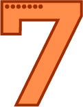

나의 궁합 코드 : 1001
나랑 잘 맞는 코드 : 0010, 0000 / 안 맞는 코드 : 0111
- 실용과 논리를 중요시하기 때문에 타인의 감정에 공감하는 능력이 현저히 부족하고 자신의 감정에 휘둘리는 것을 싫어하기 때문에 항상 이성적인 상태를 유지하고자 합니다. 또한 연애를 할 때는 직접적이고 솔직한 태도를 보여주는 편입니다. 공감과 이해로 상대를 위해주기보다는 논리적인 해결책을 마련해줌으로써 도움을 주는 것을 선호하기 때문에 너무 감성적인 상대와는 잘 맞지 않을 수 있습니다.
- 계획 없이 즉흥적이며 돌발행동을 종종 하는 본인과 비슷한 유형과 궁합이 좋습니다. 모두 구체적인 계획 없이 공기의 흐름대로 인생을 사는 유형들은 서로 이해하고 보듬어줄 수 있습니다.